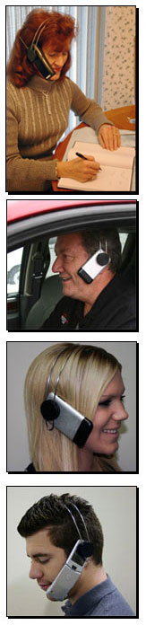

About
This new product brings the ultimate in simplicity and function to your cell phone. It provides hands free operation while maintaining all the functionality and sound quality that your phone can offer. Simply attach your phone to the Cell-Mate, slide it over your head, and you're ready to go! There are no plugs or batteries to worry about, no loss of sound quality due to an aftermarket speaker, no Bluetooth signals to sync, just your phone like you've always known it...now hands free! Plus the lightweight adjustable Cell-Mate meets the needs for all current state laws requiring hands free cell phone use while driving.

It's the Law
Currently there are 13 states that have passed legislation banning the use of cell phone by drivers unless a hands free device is used.
Many more states currently have legislation being pushed through forcing drivers to use a hands free device.
Many cities that are not covered by state legislation have decided to ban cell phones on their own including cities like Chicago and Detroit.
It is estimated that by the end of 2009, 80% of all U.S. states will have some form of legislation regarding cell phone usage while driving.
Quality of Reception
All cell phones have reception problems. Every time you introduce a new element to the phone (wireless headset), there is a loss in reception quality.
All wireless headsets reception quality is compared to that of the phone itself. Since the Cell-Mate allows you to eliminate the headset, you will always have the best quality your phone can offer.
No Frustration
You no longer have to deal with pairing your phone to your headset.
No more dropped calls when your headset battery dies.
No more charging of your headset.
The Cell-Mate is much less expensive than a hands free headset. Why pay 2-3 times more for frustrations?